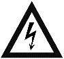

Safety Guidelines
Overview of the safety guidelines for Typhoon HIL simulator hardware
Safety Guidelines
Do not use this product in any manner not specified by the manufacturer. Do not perform any unauthorized modifications to the product. For service and repair, contact Typhoon HIL Inc. at www.typhoon-hil.com/contact.
| Guideline Type | Guidelines |
|---|---|
|
General Guidelines  |
|
|
Power - HIL5 and HIL6 series |
|
|
Power - HIL1 and HIL4 series |
|
|
Cleaning |
|
| Operating Environment |
|
| Storage Environment |
|
Warning, risk of electric shock
HIL simulator devices should be placed on a flat surface, free of vibrations and dust. When setting up the device and connecting your hardware to it, please observe the following guidelines:
- Make sure that the device is turned off
- Place the device on a flat surface, maintaining 10 cm clearance from the device back panel
- Make sure that the ventilation holes are not covered
- Position the device so that power cord disconnection is possible
- Follow the Quick-start document provided inside the Typhoon HIL shipping package